I design booking flows in code, and build the tools my team designs with.
Design engineer at Travelopia, a group of travel brands. I work on Moorings, Sunsail and Le Boat: quote flows, checkout, and Helix, the workspace ten brand teams now use instead of Figma.
Something I obsessed over Price the stay, not the date →What Helix is
Where a brand's website gets designed using the website itself, instead of a picture of it.
- It is the real thingEvery brand has building blocks: buttons, cards, headers, the colours and spacing it is allowed to use. Helix shows them working, read from the brand's own code, so the spacing on screen is the spacing that ships. A new idea starts as a rough page made of those blocks, goes round as a link, and once people agree it becomes a block engineers build with. Nobody hands a drawing to someone who rebuilds it slightly differently.
- Built for the people who do not codeA stakeholder opens a link and leaves a comment on the exact thing they are talking about. No install, no repository, no seat to buy.
- Why it existsTen brands, and one designer on most of them. One workspace each brand installs and keeps current on its own, instead of ten design systems and ten ways of agreeing on anything.
Work
-
01
Helix
The design-system workspace ten brand teams use instead of Figma. Tokens read from the brand's own stylesheet, component pages with a real API, explorations as live prototypes at their own URL.
2026 · mine · Next.js, React, Tailwind · chrome 2.0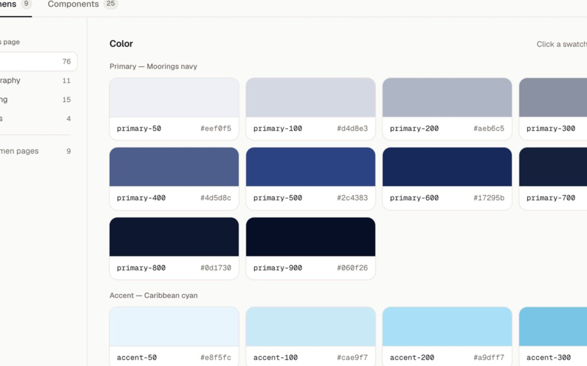
-
02
Comments, in-house
Leaving feedback on a design used to need a paid hosting seat per person, at $205 each. I built the comment layer into the workspace instead: pinned to the element, images and links, one sign-in, eight brand teams.
2026 · mine, end to end · Postgres, Better Auth, server routes · live on eight brands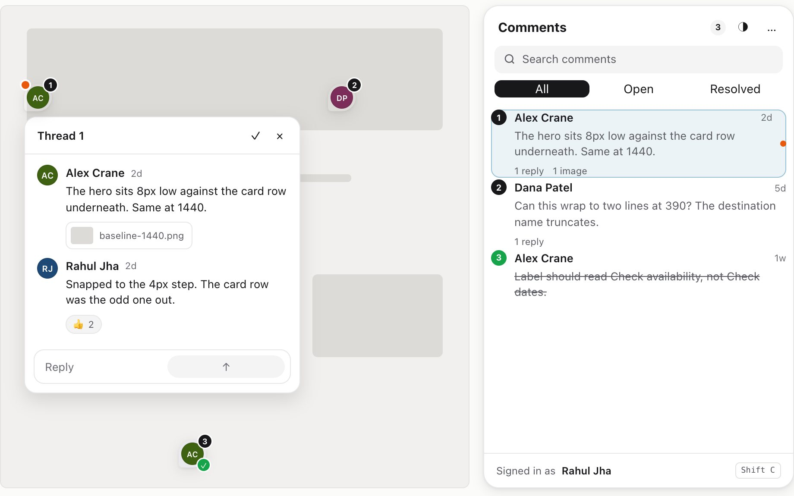
-
03
The Helix skills
Fourteen skills that build the design system, and the rule that stops any of them running alone. Two ways in: convert the production site you already ship, or explore in lightweight HTML, get it approved, and promote it.
2026 · mine · Claude Code and OpenCode · one source, two harnesses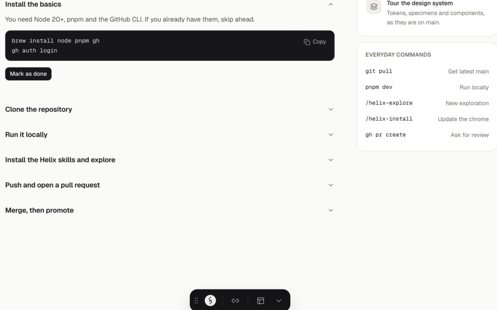
-
04
The toolbar
Ten tools in one dock, built because Helix renders real pages and everyone wanted to do something to the one in front of them. Comments came first. Then the registry, the kit, and a skill so the next one is not mine.
2026 · mine · Comments, Annotate, Inspect, Changes, Snap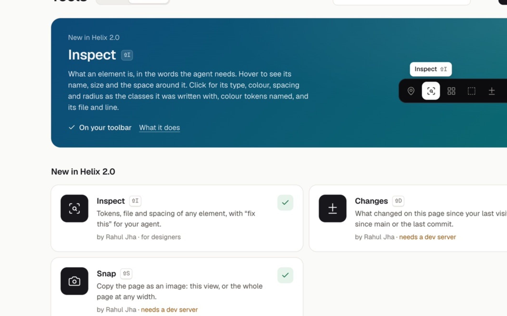
-
05
Build My Quote
The most visited page on a charter site, rebuilt as a guided booking flow. Eleven variants, one hypothesis each, and two flows now in front of real bookers in a user test.
Sep–Oct 2026 · mine · eleven variants, user test running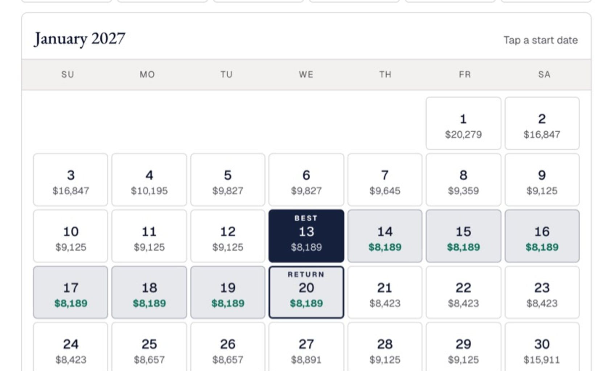
-
06
A paid landing page
A hero and lead form for a charter brand's paid ads. The evidence put the trip questions first and the photos first on a phone. Version 1 shipped as the control, so each idea gets its own test.
Sep–Oct 2026 · mine · three variants, one final · shipped 14 Oct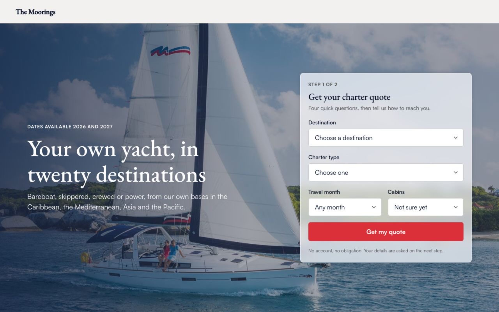
-
07
The growth-design skill
How I work a growth ticket, written down as one Claude Code skill: eleven steps, six stops for me, a library it reads and a log it writes. The two case studies above came out of it.
Sep–Oct 2026 · mine · 3 tickets run · 25 log entries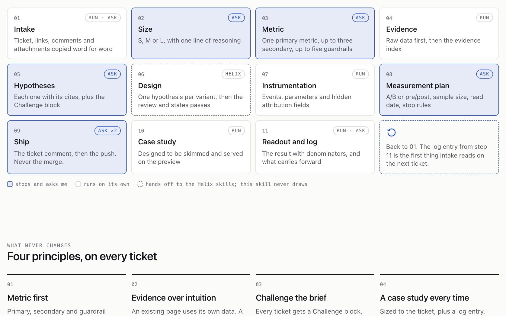
-
08
Project 831
A booking platform for a sports venue, live since March and running the place every day. A WhatsApp bot, a staff desk, a public widget and a voice API over one availability module.
Mar–Oct 2026 · mine · React, Vercel functions, Postgres · 2,900 tests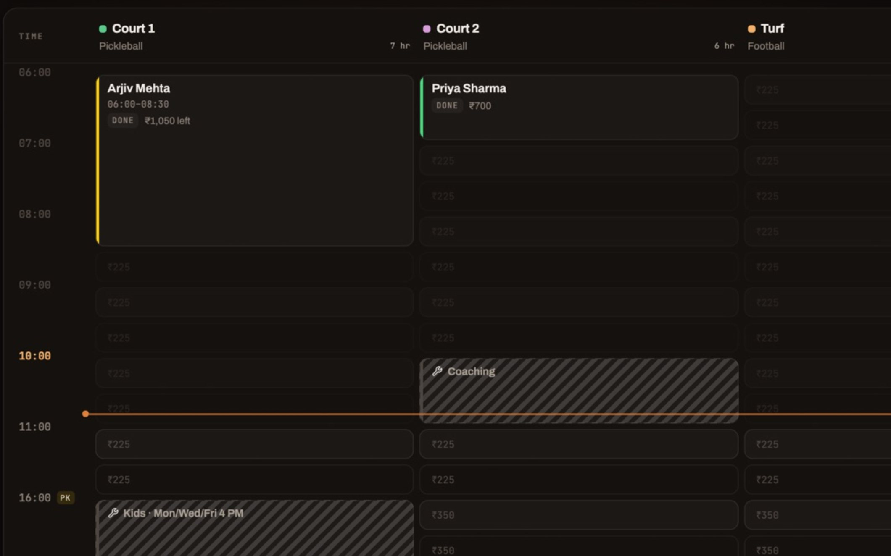
-
09
Le Boat checkout
A four-step checkout rebuilt around the decision instead of the form, for two brands out of one token sheet. Built in one week. Three months live, damage cover per booking has nearly doubled and checkout errors are down a quarter.
Jul 2026 · mine · one week, Next.js, Zod · live since 20 July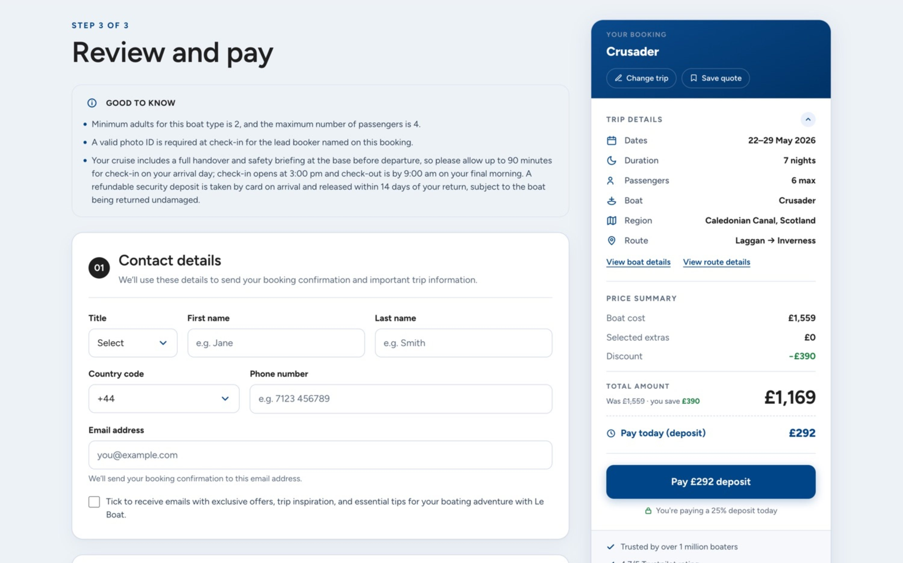
-
10
The captain
A crew of agents that does my solo work across four brands, and the board I run it from. One inbox for everyone waiting on me. They draft; a gate in code makes sure only I decide.
Oct 2026 · mine · Claude Code, hooks, scheduled runs · running every weekday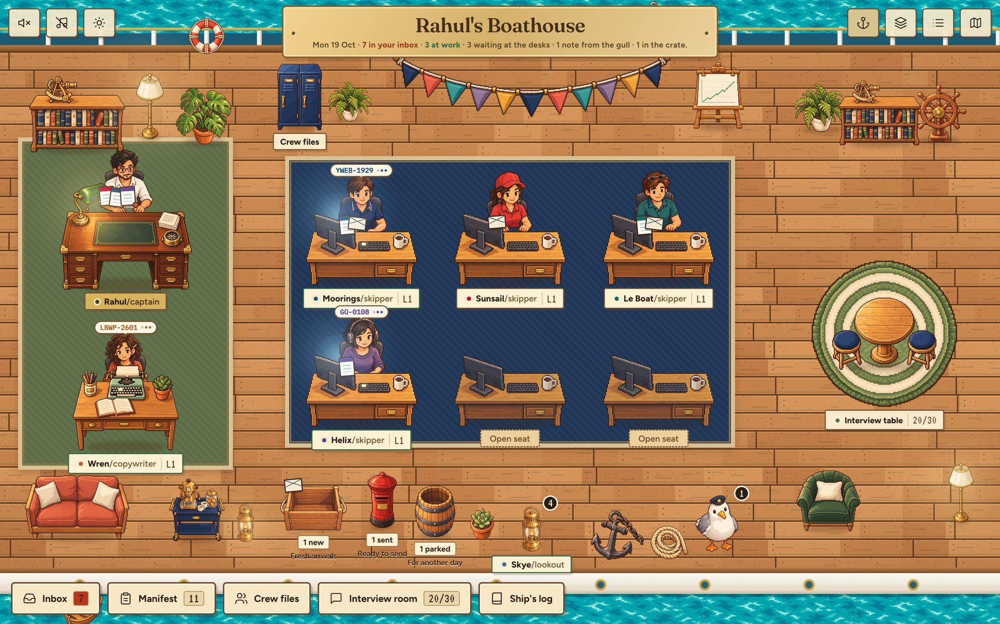
-
11
Scheduling primitives
Project 831 refuses any time zone but its own. This is that shortcut done properly: a calendar, a slot picker, a zone search and a repeat field for coss ui, on Base UI, with the date logic on Intl alone.
Oct 2026 · mine · coss ui, Base UI, Intl · public repo, 35 tests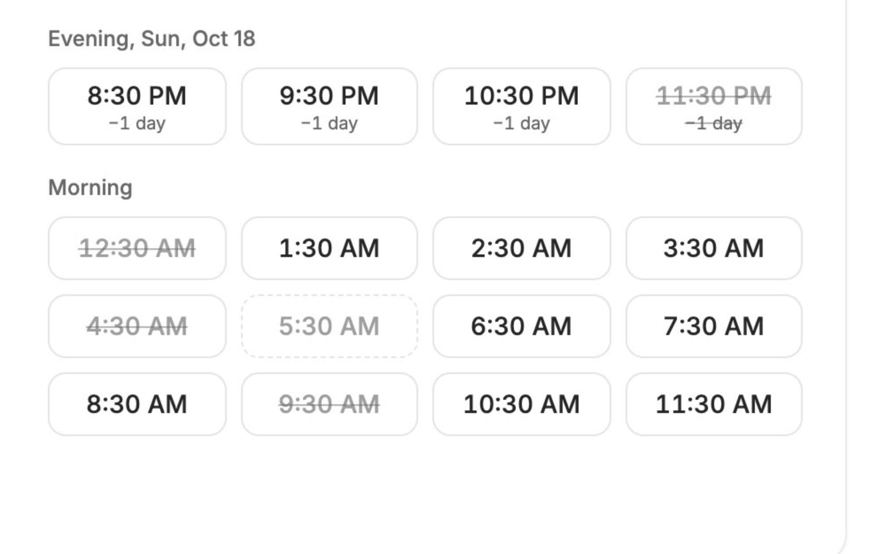
Also
- growth-designA Claude Code skill that runs a design ticket as growth work: metric, evidence, hypotheses, one per variant, then a measurement plan and a learning log the next ticket reads.
- Half-hour slotsOne HTML proposal that changed how a booking grid is sold. Written to be argued with, not admired.